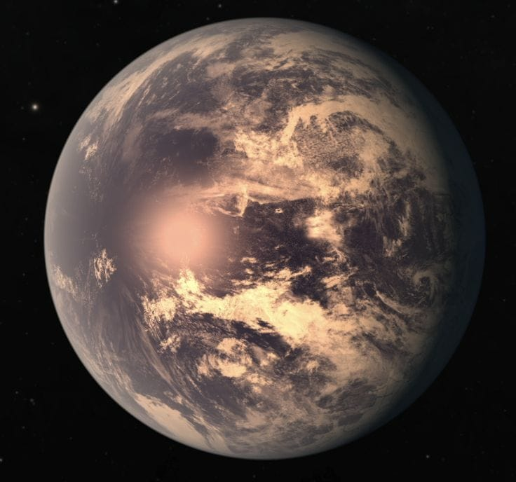

EXPLORACIÓN ESPACIAL
¿Puede el ser humano vivir en TRAPPIST-1E?
TRAPPIST-1E es un exoplaneta que se encuentra a unos 39 años luz de la Tierra, en la constelación de Acuario. Es uno de los mundos que despiertan interés en la búsqueda de vida fuera de nuestro sistema solar por encontrarse en la zona habitable de su estrella.
Conocer más
CreadorEliel Guevara Cortés
Proyecto escolarCBTIS 29
FechaOctubre 2025